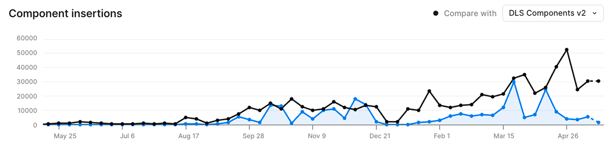

Aegis : Designing a Design System for internal teams
Aegis is a project focused on creating a comprehensive design system for internal teams, ensuring consistency and efficiency in our design and development processes.
Building Consistent Digital Foundations
The Need
Being part of the internal design team, we build digital solutions that streamline our workflows and enhance productivity of our Internal users. But having multiple product teams working independently leads to inconsistencies in the UI, repeated component creation, difficulty managing dark/light themes leading to weak alignment between design and development
Objectives
Being worked on multiple projects over the last 2 years, I got a undertstanding of the type of requirements which are mostly standard web friendly UI components, it is bery rarely when we need to create very complex UIs. But even for those standard components there are inconsistencies accross the teams.
And with the advent of MCPs, and agentic workflows the need of a basic design system has become crucial. That is why I took this initiative to build a comprehensive design system library
My Goal was to create a scalable and maintainable system that -
1. Standardizes brand colors
2. Unifies common web components based on Material Gesign
3. Simplifies theming and future expansion through tokens and variables

Approach
I started by conducting an audit of the existing UI components across different teams to identify common patterns and inconsistencies. I then created a comprehensive inventory of components, categorizing them based on their functionality and usage. Next, I designed a unified set of components following Material Design principles, ensuring they were flexible enough to accommodate various use cases.
Next I created tokens and variables for colors and spacing. Colors were deliverately chosen from exisitng SLB brand colors to ensure consistency with the overall brand identity, and also to make it easier for teams to adopt the design system without having to make significant changes to their existing designs.
Finally, I documented the design system with clear guidelines and best practices for implementation, making it easy for teams to adopt and contribute to the system.
Translating Brand Identity into Design Tokens
I implemented a token-based approach for managing design values, ensuring consistency and ease of maintenance across the design system. We stick to two levels of tokens - Primitives and Semantic tokens. While an optional third collection for component variables (ie. variables that reference your semantic values that are scoped to specific components to give even further context and meaning) is also being considered for future expansion.

Structuring Themes Through Semantic Variables
With the increasing need of dark mode in most of out data heavy applications, I also implemented a theming system that allows for easy switching between light and dark modes. This was one of the most painful part for the teams before the design system, as they had to manage two separate color palettes and ensure consistency across both themes. With the design system, we were able to create a single set of components that automatically adapt to the selected theme, significantly reducing the effort required for theme management and ensuring a consistent user experience across all applications.
Going minimal over component selection
The design system includes a comprehensive library of components that cover a wide range of use cases, from basic UI elements like buttons and form fields to more complex components like data tables and data grids.

Building components becomes harder when designers are the users.
Each component in the design system is designed with a clear structure and hierarchy, making it easy for teams to understand how to use and customize them. The components are built using native figma features like variants, auto layout, properties and slots.
Nested components are used to create more complex components, allowing for greater flexibility and reusability. For example, a dropdown component is built using a master component which has properties that are more granular like size, color, and typography, while the actual dropdown component only has necessary properties like Selection type, state and label position.
Slots was another powerful figma feature which was recently released, which allows us to create components with dynamic content, making it easier for teams to customize the components without having to detach them from the main component. This was especially useful for components like cards and tables, where the content can vary significantly based on the use case.

Testing and Iteration
After the initial development of the design system, I conducted testing of the library with internal teams to gather feedback and identify areas for improvement. The testing was two folded - first was to test the usability and effectiveness of the design system itself, and the second was to test the brand consistency accross components.
I focused on gathering feedback on the following aspects:
Library Usability
1. Was it easy to find the components you needed?
2. Did you feel the need to detach components? Why?
3. Were component variants sufficient (sizes, states, and other properties)?
4. Did components behave as expected (Auto layout, constraints)?
Brand Consistency
1. Did the components feel consistent with the overall brand identity?
2. Were there any components that felt out of place or inconsistent with the rest of the library?
3. Did the dark mode properly correspond to the light mode?
Impact
The implementation of the Aegis Design System has led to a significant improvement in the consistency and efficiency of our design and development processes. Teams have reported a reduction in time spent on design and development tasks, as well as an increase in the overall quality of our digital products.
Even the usage of the library has surpassed our product teams design system.

Dipesh Says
The design system has been a game-changer for our team, setting up a project without worrying about brand colors and standards is such a relief
Daniela Says
It has saved us countless time and effort, specially the darkmode implementation. Most of the time, we don't have to worry about consistency anymore.
Reflection
Building a design system is an evolving process that goes far beyond creating reusable components and tokens. This project helped me understand how to think at a systems level — designing not just a library, but the underlying structure that drives consistency, scalability, and usability across products.
Working on the library also gave me a deeper appreciation for how systematic Figma infrastructure is. Features like variables, tokens, and component properties create a strong bridge between design and development, making design decisions more structured, transferable, and implementation-friendly.
I also see increasing long-term value in design systems alongside AI-assisted workflows. As interfaces become more dynamically generated, structured systems, semantic tokens, and reusable patterns will become even more critical in ensuring consistency and quality at scale.
Hence, I am also exploring integrating the design system with Storybook through Code Connect to strengthen the connection between design artifacts and production-ready components, which will bring even more value for agentic workflows.